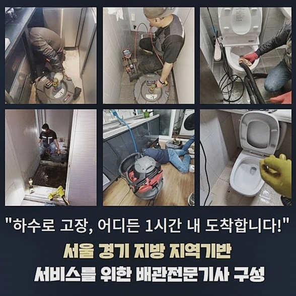
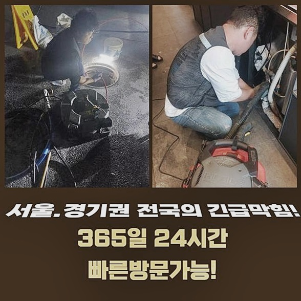
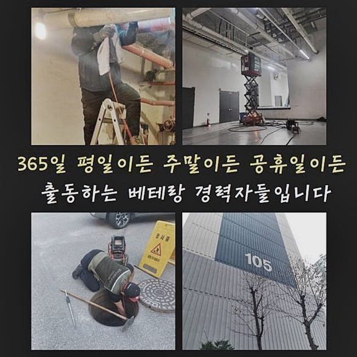
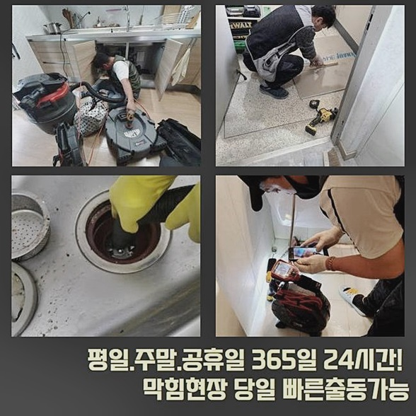
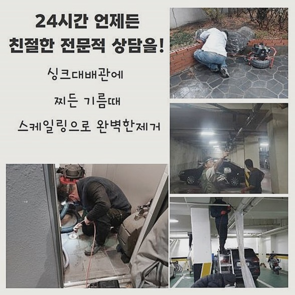
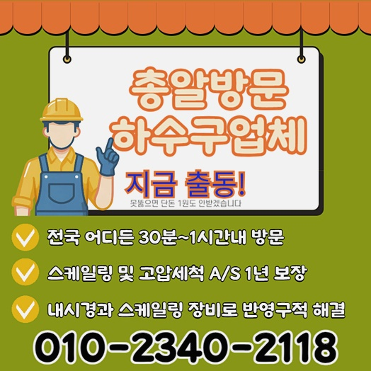

🏠 안산 월피동세탁실뚫음 사동 하수관고압세척 출장수리
안산 하수구막힘 전문 시공 후기

📋 작업 개요
- 위치: 안산
- 서비스 유형: 하수구막힘, 배관막힘, 역류해결, 뚫는업체, 배관청소, 고압세척
- 작업 일시: 2024. 7. 29. 18:09
- 업체명: 하수구수사대 (010-5615-2118)
🔍 문제 상황
안산 월피동세탁실뚫음 사동 하수관고압세척 출장수리
건물의 경우 건설을 하는 시점에 각 라인들을 더불어 깔아두기에 생활측면에서 안락하게 해줘요
그렇지만 시간의 경과에따라 하수도는 내구성이 떨어져버려버려버려 많은 피해를 일으키게 만들죠
노후된 건물내부에서 배관 관련 문제들이 발발한 고쳐낸 현상들을 목격했는데요
위처럼 배관 장애가 얼만큼 불편들을 낳게하는지 설명하는 시간을 준비했어요
이런 문제들은 전문진의 능력들이 필요한 까닭에 조속히 전문진을 통한다면 증세를 잠재우기위하여 문의를 하시는것이 알맞은 방향이겠습니다
노후화가 진행되었을 시 군데군데 잔해가 침전되는 바람에 통수과정을 막아서요
마찬가지로 하수관로에서 빠져나갈때 기름이라던지 굳어진 이물이 동시에 배관 내부로 빠지게되죠
해당 잔해는 배수관에서 굳게되어 군집을 생성시켜 하수시스템 오류를 자아내죠
그러므로 하수시스템의 내구성 저하를 막으려면 정기적으로 점검들이 행해져야 함은 분명합니다 하물며 이물이 안쌓이게 유의해주시면 됩니다
비용들을 투입해 배수관을 안전하게 유지하는게 생활측면의 편의들을 증가하고자 함에 중요한 역할을 합니다
허나 이물들이 쌓인걸 그저 손놓고 있는다면 또다른 문제가 파생될 여지가 충분해 잔해물을 청소한 다음 청결하게 진단하는것이 중요한데요

🔎 원인 분석
💡 전문가 진단: 정밀 진단 장비를 사용하여 슬러지의 고착 여부를 판명하고 타격/세척 작업을 실시했습니다.
석션장치를 이용해서 잔해들을 제거시키고 세척을 시작하는건 해결에 있어서 큰 도움이 됩니다
이처럼 간헐적으로라도 청소와 관리들을 행하면 배관 관련 문제들을 예방하게 됩니다
이물이 퇴적되어버린 하수관과 오수 투입부분들을 살핀 뒤 증상들의 근간이 되는 원인들을 파악해봐야 해요
이러한 내용을 초고로해서 문제양상과 알맞는 작업들을 준비하고 실시해주면 완성도높은 결과들을 얻어가실 수 있습니다
주변에 있는 뚫어뻥의 용품을 애용하는건 잠시나마 증상을 완화시켜주지만 완벽한 해결책들이 되기엔 무리가따르죠
전문인의 실력으로 안정적이고 완성도 높은 처리를 통한다면 하수구막힘 증상을 오차없게 수리합니다
노하우들과 이전의 경험을 초고하여 세척세척을 해준다면 최고의 결과물을 얻게될거에요
필요하다면 전문인들의 해결로서 안전한 이물제거를 수행하는것이 중요하죠
이러한 까닭에 문제들이 벌어졌을 때 조속히 전문진을 행하면 의뢰한 후 해결에 힘써주셔야 합니다
배수관으로 배수되는 속력이 줄었거나 역류문제가 발발하는것과같이 추가적인 피해들이 발발하는 시점에 더욱 중요한데요
작업이 행해지지않을 시 중심부역할을 하는 배수관서 손상들이 생길 수 있으며 2차적인 문제들로 심화될지 몰라요
평시에 이물들이 누적되어있는 배수관은 흡입도구 내시경기기 스케일링 장비들을 이용해요

🔧 작업 과정
이물을 제거시키기위하여 진단 후 석션가용 후 고압 세척을 행하면 청결히 배수로를 수리해줍니다
세척을 해줄때 잔해물을 천천히 청소하고 적절한 작업으로 하수로를 청결하게 수리해요
위험하게 하는건 현 상황들을 제대로 고쳐내지 못할거에요 내시경기기는 깊은탓에 체크하는게 어려웠던 부분까지 체크해볼 수 있어 없어선 안될 녀석인데요
잔해물들의 위치들을 살핀 뒤 대응책들을 수행해요
워터젯 고압세척을 통하여 잔해물을 청결히 청소하고 있는데요
전문진의 해결에 관한 대처를 따라 알맞게 세척을 진행시키는게 중요하겠습니다
총체적인 접근 방식을 통하여 하수구막힘 증상들을 적재적소 해결합니다
무분별하게 해결에 뛰어들지마시고 전문인의 조언으로 대응방식을 세우시는것이 올바른 방법이에요
하수라인에 오류가 생기면 배수 속도들이 떨어지고 역류문제가 야기될 확률이 있으므로 중앙시설로 흘러가는 유속들이 둔화되는 이로인해 문제들이 벌어지죠
이 단계에서 배관에서는 팽창과 수축이 지속되면서 균열들이 야기되므로 감내해야만하는 복합적인 증상들을 마주해야 할거에요
그러므로 작업시간을 그어놓지않는게 중요하겠습니다
내방했었던 문제의 공간에서는 욕실안에서 냄새들이 코를 찔렀고 사태가 이루 말할 수 없었죠
레버를 내려 역류되는 문제를 관찰해보고자 했어요
하수가 빠지질 못하거나 지속적으로 야기되는지 세심히 알아보았죠
이렇듯 함으로써 전문업체의 입장에선 문제 까닭을 인지해 세척에 수월함을 유지시킬 수 있죠
이물들을 청소해준후 외부와 연결된 곳을 무결점하게 분리해서 안쪽을 체크했습니다
내시경장치로 배수관에 증상이 시작되는 부위들을 보고서 어째서 안빠지는지 까닭들을 찾아내기 위해 초집중모드에 들어갔죠
의뢰인분께 배수관의 현 상황들을 보여드린 뒤 안내하고 완벽하게 시정되었음을 확인해보게끔 해드렸습니다
무슨 까닭으로 막히게되는 사태가 발생된건지 찾아내어 원인들을 제거시키고, 안정적인 해결방법을 찾아내는것에 집중했습니다


✅ 작업 완료
그렇기에 고객의 고민을 잡아내고 무결점의 슬로건을 지원하기위해 오늘도 달리고 있습니다
저희들의 전문가가 고객의 집에 오기전 다른업체서 방문해보았으나 증상이 나아지질 못해 결국 저희를 불러주셨어요
의뢰인은 저희들의 작업방식에 칭찬을 해주셨고 뚫어내지 못하면 비용들을 청구드리지않고 사후관리를 제공해주는게 끌렸다고 하셔쓴데요
다양한 작업방식을 준비하여 고민을 최소화하여 고객분의 편리를 보장하도록 오늘도 달립니다
시간에 상관없이 저희께 연락할 시 서둘러서 달려갈게요!




⚠️ 하수구 배관 막힘 예방 및 관리 가이드
- ✅ 머리카락, 비닐, 물티슈 등 물에 분해되지 않는 이물질은 하수구 유입을 절대 금지해 주세요.
- ✅ 하수구 거름망을 씌우고 모여진 이물질은 주기적으로 쓰레기통에 바로 비워주셔야 합니다.
- ✅ 배관 노후가 심할 경우 이물질이 더 쉽게 걸리므로 주기적인 배관 세척(고압세척 등)을 권장합니다.
- ✅ 작업 후 1년 이내 재발 시 하수구수사대에서 무상 A/S 보증 서비스를 제공합니다.
💡 핵심 정리
- 확실한 장비 작업(내시경 점검 및 샤프트 스케일링)으로 원인을 뿌리 뽑습니다.
- 작업 후 1년 이내에 동일한 부위 재발 시 100% 무상 A/S 서비스를 보장합니다.
- 서울 · 경기 · 인천 전 지역에 24시간 언제든 긴급 출동할 수 있도록 항시 대기 중입니다.
❓ 자주 묻는 질문 (FAQ)
🚨 안산 하수구막힘 문제로 고민이신가요?
정확한 원인 진단과 확실한 시공으로 재발 없는 해결을 약속드립니다.
24시간 긴급 출동 | 서울 · 경기 · 인천 전지역 | 1년 내 재발 시 무상 A/S